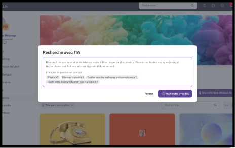
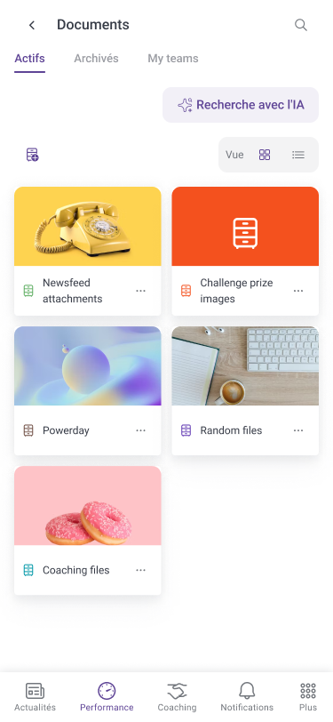
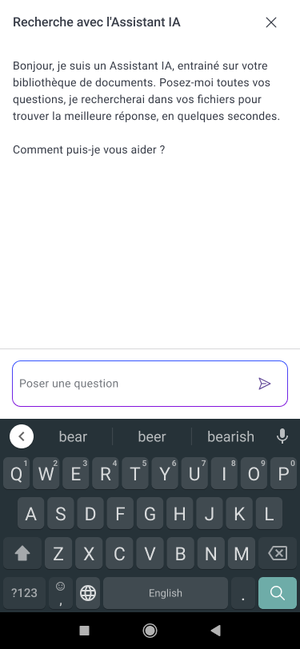
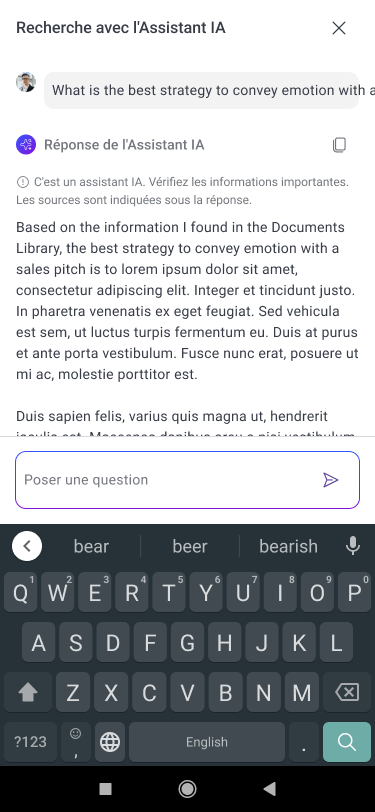
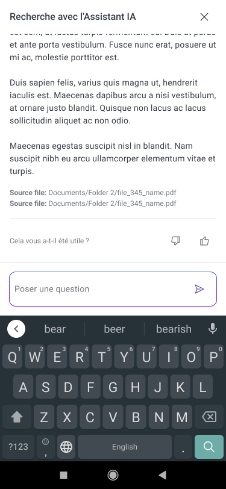

One of two major AI initiatives I owned end-to-end at Incenteev: a conversational assistant that answers employee questions from the company’s own knowledge base.

End-to-endOwned problem to post-launch
Sole PMOn the initiative
2026Shipped
Context
Incenteev’s customers were sitting on large internal knowledge bases that nobody read. Answers existed, but finding them meant knowing where to look — so employees asked colleagues instead, and the same questions were answered over and over.
The bet was that a conversational layer on top of that existing content would turn a dead archive into something people use daily. I owned the initiative from problem identification through to post-launch tracking.
What I did
Ran the discovery: user interviews and surveys to establish which questions actually got asked, and how often existing search failed to answer them.
Defined the scope and the guardrails — what the bot should answer confidently, where it should defer to a human, and how it should cite its sources.
Wrote the specifications and worked with the dev team through delivery as the sole PM on the initiative.
Set up post-launch tracking so that answer quality and adoption were measurable rather than anecdotal.
Impact
Shipped as one of the two flagship AI initiatives in the Incenteev product line.
Turned an underused knowledge base into a queryable, everyday tool.
Established the pattern the company reused for later AI features.
Screens

The entry point: “Recherche avec l’IA” sits right on the Documents library.

The assistant explains up front what it can search.

Answers carry a reminder to double-check important information.

Every answer cites its source files and asks for feedback.